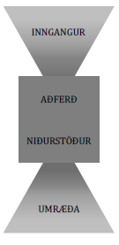
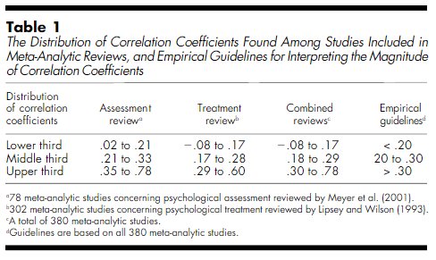
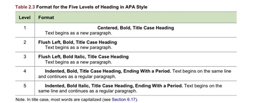

Við mælum með því að lesa þetta skjal afar vel. Við höfum safnað saman öllum þeim helstu upplýsingum sem við teljum að sé brýnt að ítreka fyrir skilin. Athugið að þetta er lifandi skjal og gæti því tekið smávægilegum breytingum eftir því sem nær dregur skilum. Þið getið séð hvenær skjalið var síðast uppfært neðst í skjalinu. Við höfum gengið úr skugga um að ef einhver breyting á sér stað þá uppfærist dagsetningin sem er neðst sjálfkrafa.
Smelltu hér til þess að skoða ítarlegar leiðbeiningar um hvernig megi skrifa sem besta ritgerð. Ráðleggingarnar þarna má finna eiga við fleiri kúrsa en Persónuleikasálfræði og væri gagnlegt fyrir ykkur að lesa!
Markmið verkefna sem þessa er að þjálfast í að skrifa akademískar skýrslur. Þetta er þemað í flestum áföngum í sálfræðideild.
Hafið í huga að skýrslan á að vera eins skýr og unnt er. Ekki nota óþarfa akademískt jargon. Þið eigið að nota akademískt málfar og viðeigandi orðfæri (t.d. eins og finna má á glærum í fyrirlestrum ykkar).
Hér má sjá fyrirlestur (á ensku) um hvers vegna ritun og textasmíði eru mikilvægir þættir í námi allra. (ATH. Hljóðið er fremur lágt svo að það þarf að hækka þónokkuð í hátölurum).
Þið eruð að skrifa rannsóknarskýrslu um persónuleikaþætti sem á að vera í samræmi við APA 7 staðalinn. Við höfum þegar útbúið sniðmát fyrir ykkur til þess að styðjast við. Þó að það sé ekki skylda að nota það, þá mælum við eindregið með því að þið gerið það! Sniðmátið er í samræmi við APA 7 leiðbeiningar og fyrir vikið væri sérkennilegt ef að verkefnið ykkar er markvert frábrugðið uppsetningunni sem finna má í sniðmátinu.
Hér má sjá mynd sem sýnir dæmigerðar leiðbeiningar um skýrsluskrif.

Í inngangi erum við á höttunum eftir því að þið samþættið (e. synthesize) litteratúrinn og talið um hugsmíðar. Takið afstöðu og rökstyðjið hana, þ.e. sýnið okkur skilning ykkar á því efni sem um ræðir hverju sinni.
Það á ekki að vera neitt yfirheiti á inngangskaflanum!
Guðmundur Arnkelsson gaf út bók sem heitir Orðgnótt, í henni eru flestöll algeng hugtök á íslensku í sálfræði.
Til aukreitis við Orðgnótt, þá mælum við með íðorðabankanum og Snöru.
Mikilvægt að rökstyðja tilgáturnar ykkar – af hverju haldið það að X sé að fara gerast? – stundum er gott að hugsa um rassálfana úr Ronju ræningjadóttur. ### Ráðleggingar fyrir mælitæki Lýsa öllum þeim mælitækjum sem voru notuð. Þar á meðal skal tiltaka skorun breyta, heildarskor, spönn, innri áreiðanleika og svo framvegis.
Lýsa framkvæmdinni þannig að einhver annar geti gert það sama og þið gerið. Nákvæmni er aðalatrið hér.
Munið að í öllum nemendaverkefnum er ykkar hlutverk að sannfæra kennarann um að þið skiljið efnið.
Það getur því verið gagnlegt að ímynda sér að sá sem les yfir haldi að þið vitið ekki hvað þið eruð að tala um og að ykkar hlutverk sé að sannfæra yfirlesarann um að það sé rangt.
Smelltu hér til þess að skoða leiðbeiningar um hvernig skuli birta töflur og myndir.
Hafið í huga að þið þurfið að greina frá tölfræðiniðurstöðum í samræmi við APA leiðbeiningar. Þið getið til dæmis skoðað www.gba.is til þess að fá upplýsingar um framsetningu tölfræðiniðurstaðna.
Áhrifastæð er gildi sem mælir styrkleika sambands milli tveggja breyta í þýði með því að leggja mat á stærð sambandsins í úrtaki. Dæmi um áhrifastærðir eru fylgni milli tveggja breyta (Pearson’s r), Cohen’s d, skýringarhlutfall og áhættuhlutfall (þ.e. hætta á að tiltekinn atburður [t.d. hjartaáfall] gerist.
Það má umbreyta áhrifastæðum frá einu formi yfir í annað. Til dæmis má breyta fylgnistuðli yfir í skýringarhlutfall eða Cohen’s d. Smelltu hér til þess að opna vefsíðu sem gerir það á einfaldan máta.
Höfum í huga að það skal ekki nota viðmið Cohen’s þegar að áhrifastærð er túlkuð. Cohen giskaði á hvaða áhrifastærð væri lítil, miðlungs og stór.
Hins vegar sýndi James F. Hemphill (2003) að þessi ágiskun Cohen’s kæmi ekki heim og saman við niðurstöður raunvísra rannsókna. Fyrir vikið skal nota viðmið Hemphill’s þegar áhrifastæð er túlkuð.
Hér má sjá mynd úr grein hans

Smellið hér til þess að lesa grein Hemphill (2003).
Áhrifastærðir eru viðbót við tölfræðilegar tilgátuprófanir og gegna mikilvægu hlutverki í að meta power svo unnt sé að meta stærð úrtaks sem þarf til ef sýna á fram á marktækan mun í úrtaki milli tveggja eða fleiri breyta (sé hann til staðar í þýði), eru mikilvægar í safngreiningum.
Áhrifastæðir nauðsynlegar til þess að túlka niðurstöður á merkingarbæran máta.
Það er einhver mýta meðal nemenda að það megi ekki minnast á nýjar heimildir í umræðu. Það er rangt. Ef að tengsl milli hugsmíða eru á skjön við það sem þið sáuð fyrir ykkur í upphafi rannsóknar, þá er eðlilegt að tefla fram nýjum heimildum sem geta gert grein fyrir því hvers vegna það kunni að vera.
Verkefnalýsingin segir a.m.k. 15 heimildir. Þar að auki viljum við að þið vísið í það tölfræðiforrit sem þið notið. Smelltu hér til þess að sjá hvernig skal vísa í tölfræðiforrit.
Smelltu hér til þess að skoða hvað telst sem viðeigandi magn heimilda.
Smelltu hér fyrir tékklista um hvernig skuli bera sig að þegar vísað er í heimildir.
Smelltu hér til þess að skoða þau skref sem bera þarf að fylgja við heimildanotkun.
Hér má sjá gamalt vídjó sem þar sem ég útlista hvernig skuli bera sig að í ritun skýrsla í tölfræði, hvernig íslensk aðlögun fyrir APA stíl 7. útgáfu lítur út í praxís og leiðbeiningar fyrir SPSS.
Passið samræmi í setningaskipan og ekki gleyma rauða þræðinum. Þið getið hugsað skrif sem þessi á eftirfarandi máta: - Hvert og eitt orð í setningu á að vera í röklegu samhengi við setninguna í heild og koma heim og saman við þema setningarinnar. - Hver og ein setning í efnisgrein á að vera í röklegu samhengi við aðrar setningar í efnisgreininni og koma heim og saman við þemað í efnisgreininni í heild sem og undirkaflann sem hún tilheyrir. - Reglan með fjölda orða í efnisgreinum er að efnisgrein skal innihalda 145 orð ± 15 orð. - Hver efnisgrein (að öllu öðru óbreyttu) ætti bara að fjalla um eitthvað eitt. - Hver og einn undirkafli á að vera í röklegu samhengi við þann yfirkafla sem hann tilheyrir. - Hver og einn yfirkafli á að vera í röklegu samhengi við ritgerðina í heild.
Þegar þið eruð búin að ganga úr skugga um að allt ofangreint kemur heim og saman við almenna skynsemi, þá skal leggja heildrænt mat á textann og laga með tilliti til flæðis. Með öðrum orðum, ekki gleyma rauða þræðinum sem á að leiða lesandann í gegnum ritgerðina ykkar!!!
Dæmisaga
Eitt sinn var kennari við deildina sem rammaði inn rauðan þráð úr garni
og hengdi upp á vegg á skrifstofu sinni. Aðspurður um hvað þetta væri
sagði hann að þetta væri rauði þráðurinn sem vantaði alltaf í
verkefni nemenda.
Academic writing is all about rewriting!
Að endurskrifa texta er eitt af því sem einkennir nemendur sem fá háa einkunn.
Ekki bara lýsa rannsóknum og niðurstöðum þeirra í inngagni. Samþættið niðurstöður margra rannsókna í stað þess að telja upp rannsóknir.
Hafið líka í huga að það er ekki síður mikilvægt að benda lesendum á rannsóknir og niðurstöður sem ganga í berhögg við þau tengsl sem þið teljið (og niðurstöður raunvísra rannsókna styðja) að séu til staðar. Í rannsóknum er það venjan, fremur en undantekningin, að fólk er ósammála um hvernig megi skilgreina hugsmíðar og mæla þær. Fyrir vikið væri sérkennilegt ef að allar heimildir ykkar styðji við tilgátu ykkar. Að því sögðu má auðvitað gera ráð fyrir því að meginþorri þeirra heimilda sem þið vísið í styðji við tilgátuna ykkar.
Smelltu hér til þess að skoða leiðbeiningar APA um hvernig ásýnd nemendaverkefni skuli líta út.

Skoðum glærurnar sem eru á Canvas.
Þegar við tölum um að tiltaka hvernig skorun breyta fór fram, þá væri eftirfarandi texti ágætis dæmi um þá nákvæmni sem við erum á höttunum eftir:
Persónuleikaþáttur D (Týpa D) samanstendur tveimur undirþáttum: Neikvæð líðan og félagsleg hömlun. Til þess að uppfylla viðmið fyrir persónuleikaþáttinn D þurfa skor beggja undirþátta sjálfsmatskvarðans DS 14 að vera hærri eða jafnt og 10. Við úrvinnslu gagna voru atriðum 1 og 3 snúið áður en heildarskor hvors þáttar lögð saman. Þátttakendur með heildarskor sem var hærra eða jafnt og 10 á báðum undirþáttum flokkunina Týpa D og var þannig persónuleikaþáttur D skoraður sem tvíkostabreyta (þ.e. “Týpa D” og “Ekki Týpa D).
Í undirkaflanum þátttakendur gæti verið hægt að tiltaka fjölda þeirra sem mæta viðmiðum fyrir Týpu D og fjölda þeirra sem mæta þeim ekki [t.d. “alls voru X sem mættu viðmiðum fyrir persónuleikaþáttinn D (X%) og X sem mættu ekki viðmiðum fyrir persónuleikaþáttinn D (X%)]. Slíkt myndi ríma við eðlilega lýsingu á þátttakendum rannsóknarinnar sem væri í samhengi við ykkar rannsókn. Hins vegar má einnig flokka það undir niðurstöður (sem sagt lýsandi tölfræði) og væri því e.t.v. eðlilegra að birta það í niðurstöðukaflanum.
Ef þið eruð með tvær samfelldar breytur, þá notið þið fylgnipróf!
Það er villa í leiðbeiningum fyrir Rosenberg kvarðan. Í endurkóðun gildir eftirfarandi: Svör sem skiluðu gildinu 1 eiga að fá nýtt gildi sem er jafnt og 4, svör sem skiluðu gildinu 2 fá nýtt gildi sem er jafnt og 3, svör sem skiluðu gildinu 3 fá nýtt gildi sem er jafnt og 2, og loks fá svör sem skiluðu gildinu 4 nýtt gildi sem er jafnt og 1. - Rétt endurkóðun er sem sagt: 1=4, 2=3, 3=2 og 4=1.
Hafið í huga að allir hópameðlimir kvitta undir verkefnið í heild. Til dæmis myndi það skjóta skökku við ef einn hópameðlimur sjái alfarið um niðurstöðukaflann, annar sjái alfarið um inngangskaflann og sá þriðji alfarið um umræðukaflann (o.s.frv.). Hver og einn hópameðlimur á að koma að öllum köflunum. Þetta er vegna þess að allir hópameðlimir fá sömu einkunn fyrir verkefnið og þurfa því að geta staðið við þann texta sem er skrifaður. Að því sögðu er ekki óalgengt að fólk skipti með sér verkum (og raunar er það venjan). “Free-rides” eru ekki í boði!
© Jón Ingi Hlynsson - Síðasta breyting átti sér stað: 2023-11-02